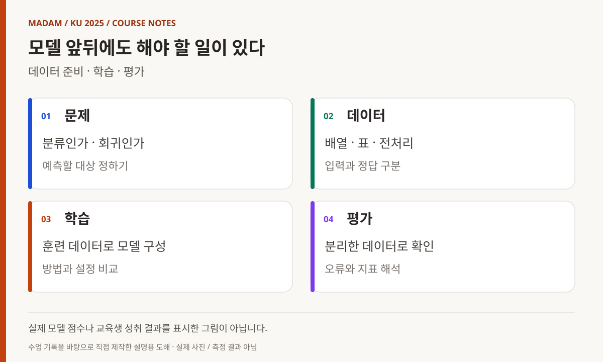
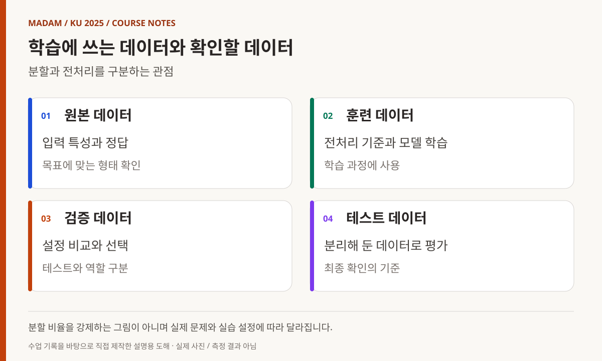
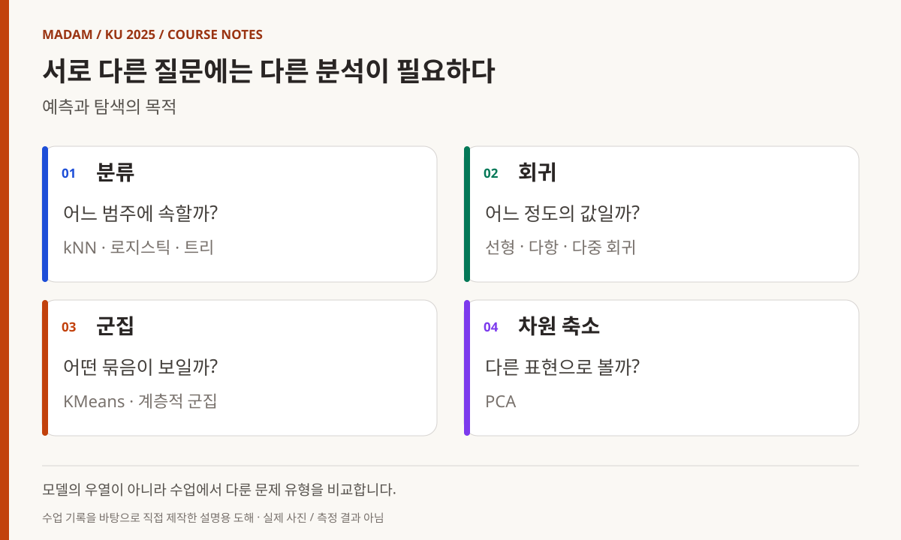
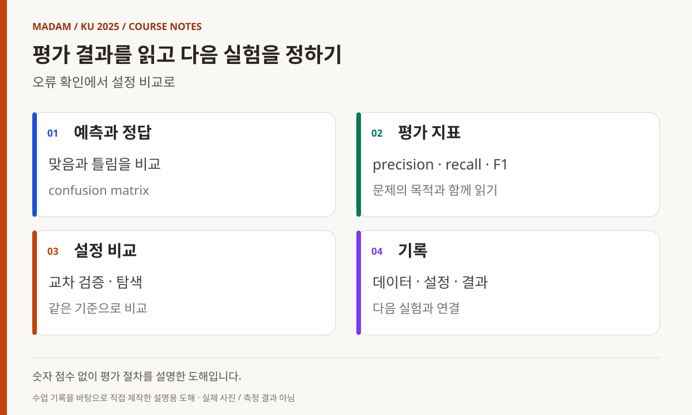

KOREA UNIVERSITY SEJONG / 2025 / SUBJECT 08
머신러닝,
데이터를 나누고
결과를 읽다
모델 이름을 넘어 데이터 준비와 평가의 흐름으로.
NumPy·회귀·분류·군집·시각적 분석을 연결한 수업.
빅데이터·IoT 소프트웨어 개발자 과정
머신러닝, 데이터를 나누고 모델의 결과를 읽는 과정
영상처리 다음 단계에서는 데이터를 통해 관계를 추정하는 방법을 다뤘다. 물고기 분류와 NumPy에서 시작해 회귀·분류, 트리와 앙상블, 군집과 차원 축소, 평가 지표로 이어졌다. 이 기간에는 프로젝트 계획서 작성과 OpenCV 보충도 함께 진행됐으므로, 6일 전체를 동일한 내용의 머신러닝 실습 시간으로 계산하지 않는다.
- 교육 기관
- 고려대학교 세종캠퍼스
- 이 글의 기간
- 2025.06.04–06.12
6일의 기록 · 프로젝트 준비·보충 포함 - 주요 학습 내용
- NumPy · Pandas · scikit-learn · Orange3
- 과정 전체와의 관계
- 2025년 3월–7월 15일 장기 과정 중
날짜별 근거가 있는 과목 수업 기록
MADAM 대표 활동 이전에 진행한 최수길의 교육 경험입니다. 과정 전반의 감독 경험을 바탕으로, 강사 수업 기록과 예제·계획서를 대조했습니다.

도해 내용 읽기
- 문제 — 분류인가 · 회귀인가 / 예측할 대상 정하기
- 데이터 — 배열 · 표 · 전처리 / 입력과 정답 구분
- 학습 — 훈련 데이터로 모델 구성 / 방법과 설정 비교
- 평가 — 분리한 데이터로 확인 / 오류와 지표 해석
06.04
첫 모델 전에 문제와 작업 환경 정리하기
첫날 1~3교시는 일경험 프로젝트 계획서 작성에 사용됐다. 실제 인공지능·머신러닝 소개는 4교시부터 기록돼 있다. 강의계획서의 첫날 구성과 차이가 있어, 이 포스트는 수업 진행 기록을 기준으로 시작 시점을 설명한다. [1]
Jupyter Notebook과 Colab을 소개하고 셀·마크다운·코드 실행을 살펴본 뒤 물고기 분류와 kNN을 다뤘다. 처음부터 복잡한 모델을 구성하기보다 길이와 무게 같은 입력으로 분류 문제를 표현하고, 주변 데이터와의 관계를 이용하는 접근을 살펴보는 구성이었다. [2]
노트북은 코드와 설명, 결과를 한 흐름에서 읽을 수 있는 작업 환경이다. 다만 저장된 출력이 있다는 사실만으로 새로운 데이터에서도 동일한 성능이 나온다고 볼 수는 없다. 이 글에서는 모델 성능 수치 대신 어떤 데이터를 어떤 순서로 다뤘는지에 초점을 맞춘다.
06.05
배열을 다루고 영상처리 내용을 보충하기
오전에는 NumPy 배열 생성과 연산, 인덱싱·슬라이싱·브로드캐스팅을 다뤘다. vstack·hstack과 배열 연결, 저장·로드도 이어졌다. 모델 입력을 만들기 전에 데이터의 모양을 바꾸고 일부를 선택하며 다시 읽는 기본 조작을 익히는 시간이었다. [1]
오후는 OpenCV 보충으로 진행됐다. hand pose, open pose, SAM이 수업 기록에 등장한다. 이 내용을 머신러닝 모델을 처음부터 모두 학습한 성과로 서술하지 않고, 영상처리 활용 범위를 넓히는 보충 설명·실습으로 구분한다.
같은 기간에 서로 다른 도구를 다룬 이유를 이해하려면 입력 데이터의 형태를 함께 봐야 한다. 수치 배열과 이미지, 모델에 넣을 데이터는 서로 분리된 주제가 아니다. 다만 실제 작성 기록과 소개 수준의 내용을 구분해 과목의 범위를 과장하지 않는 것이 중요하다.

도해 내용 읽기
- 원본 데이터 — 입력 특성과 정답 / 목표에 맞는 형태 확인
- 훈련 데이터 — 전처리 기준과 모델 학습 / 학습 과정에 사용
- 검증 데이터 — 설정 비교와 선택 / 테스트와 역할 구분
- 테스트 데이터 — 분리해 둔 데이터로 평가 / 최종 확인의 기준
06.09
학습용 데이터와 평가용 데이터를 구분하기
다음 수업일에는 데이터 전처리와 훈련·테스트 분할, 검증 데이터의 필요성, 정규화와 표준화를 설명했다. 모델에 데이터를 넣는 방법만큼 어떤 데이터로 결과를 확인하는지도 중요해지는 단계다. a05_data_split.ipynb는 데이터 분할을 다룬 강사 자료로 연결했다. [3]
이어 kNN 회귀와 선형 회귀, 다항·다중 회귀를 실습했다. 분류처럼 범주를 고르는 문제와 수치를 예측하는 문제를 구분하면서 같은 입력 자료도 다른 목표로 표현할 수 있음을 살폈다. 오후에는 로지스틱 회귀, 확률적 경사 하강법과 미니배치를 다뤘다. [1]
하루의 흐름은 모델 이름을 많이 접하는 데만 있지 않았다. 전처리, 데이터 구분, 모델의 목표, 학습 방식이라는 서로 다른 결정을 나누어 보는 시간이었다. 데이터 분할 전후에 적용하는 처리를 구분해 읽는 것은 결과 해석의 기본 점검 항목이 된다.
06.10
트리와 앙상블, 표 형태 데이터의 처리
와인 분류에서 로지스틱 회귀의 해석 문제를 살펴본 뒤 결정 트리와 앙상블로 넘어갔다. Random Forest·Gradient Boosting·Extra Trees·XGBoost·LightGBM이 설명 범위에 포함돼 있다. 각 모델의 우열이나 최종 성능을 일괄 결론내리기보다, 여러 모델을 비교할 수 있는 선택지를 살핀 수업으로 정리한다. [1][4]
Kaggle을 소개하고 Titanic 예측 결과를 제출하는 실습도 진행됐다. 실제 문제의 데이터 파일을 읽고 학습·예측 결과를 정해진 형식으로 만드는 경험이었다. 교육생의 계정과 순위, 개별 제출 파일은 공개하지 않으며 특정 점수를 달성했다고 주장하지 않는다.
Pandas의 Series·DataFrame, 읽기·쓰기와 선택·필터링, 정렬·그룹화·통계 함수가 이어졌다. 모델 밖에서 데이터를 정리하는 작업도 별도의 학습 대상이었다. 마지막에는 KMeans를 소개해 정답 범주를 사용하는 학습에서 데이터의 묶음을 탐색하는 접근으로 범위를 넓혔다.

도해 내용 읽기
- 분류 — 어느 범주에 속할까? / kNN · 로지스틱 · 트리
- 회귀 — 어느 정도의 값일까? / 선형 · 다항 · 다중 회귀
- 군집 — 어떤 묶음이 보일까? / KMeans · 계층적 군집
- 차원 축소 — 다른 표현으로 볼까? / PCA
06.11
군집과 차원 축소를 시각적으로 읽기
KMeans를 복습한 뒤 PCA, 계층적 군집과 덴드로그램을 다뤘다. 군집을 나누는 일과 표현 차원을 줄이는 일은 목적이 다르므로 한 가지 결과처럼 설명하지 않는다. 저장소의 a16_kmean.ipynb와 a17_pca.ipynb도 별도 자료로 남아 있다. [5]
Orange3 설치와 시각적 데이터 분석도 진행했다. 수업 기록에는 이미지 자료, 텍스트의 워드클라우드·감성 분석, 박스 플롯과 PCA 사례가 등장한다. 이 글은 원본 가사나 개인 정보를 옮기지 않고, 사용한 분석 방식과 도구의 연결만 설명한다.
일부 예제는 건강 관련 공개 데이터의 분석이었지만 이를 진단 능력이나 의료적 효과로 해석하지 않는다. 데이터 분석 교육의 예시로 다뤘다는 범위에 한정한다. 또한 7~8교시의 상세 내용은 기록이 비어 있어 해당 시간을 임의의 프로젝트나 심화 수업으로 채우지 않았다.
06.12
점수 하나보다 평가 지표의 의미를 보기
마지막 날에는 범주형 데이터를 처리하고 confusion matrix, accuracy, precision, recall, F1-score를 설명했다. 맞힌 개수 하나로 결과를 끝내기보다 어떤 종류의 예측 오류가 발생했는지 나누어 읽는 단계다. 이 내용은 앞서 작성한 분류 예제를 검토하는 기준으로 연결된다. [1]
MLP를 소개하고 예제를 작성했으며 Orange3 회귀와 House Prices 문제, XGBoost 하이퍼파라미터 탐색, 스태킹 앙상블을 다뤘다. GridSearchCV·RandomizedSearchCV는 설정을 바꾸는 절차를 이해하는 학습 항목으로 설명한다. 모든 조합을 검증했거나 최적 모델을 확정했다는 결과 자료는 이 포스트에 없다.
후반에는 비전 트랜스포머 활용과 워드클라우드·네트워크 도구가 기록돼 있고 평가로 마무리됐다. 모델의 종류는 넓어졌지만 다음 딥러닝 과목으로 가져갈 질문은 명확하다. 입력을 어떻게 준비하고, 학습 과정과 결과를 어떻게 구분하며, 어떤 기준으로 비교할 것인가다.

도해 내용 읽기
- 예측과 정답 — 맞음과 틀림을 비교 / confusion matrix
- 평가 지표 — precision · recall · F1 / 문제의 목적과 함께 읽기
- 설정 비교 — 교차 검증 · 탐색 / 같은 기준으로 비교
- 기록 — 데이터 · 설정 · 결과 / 다음 실험과 연결
과정의 연결
분석 결과를 설명하는 개발자로
6일의 실제 기록에는 프로젝트 준비, 영상처리 보충, 모델 학습, 시각적 분석 도구가 함께 들어 있다. 과목의 전체 흐름을 보면 데이터를 읽고 정리하는 작업과 모델을 적용하는 작업, 결과를 평가하는 작업을 구분하는 방향으로 진행됐다.
강사 저장소의 노트북은 당시 실습 내용을 추적하는 자료다. 이 글을 작성하면서 모델을 재학습하거나 데이터셋의 현재 배포 상태와 성능을 재검증한 것은 아니다. 저장된 정확도나 그래프를 교육생 전체의 성취로 대신하지 않고, 날짜별 기록과 확인 가능한 예제를 참조했다.
다음 딥러닝 과목에서는 신경망의 학습 과정과 이미지·순차 데이터 처리를 다루고, 모델을 별도 프로그램에서 호출하는 실습으로 확장한다. 머신러닝에서 익힌 데이터 준비와 평가의 관점이 그 연결을 읽는 기반이 된다.
참조 자료와 기록 범위
- 1. 날짜별 머신러닝 수업 기록 ↗
프로젝트 준비와 영상 보충을 포함한 실제 운영 내용. - 2. 물고기 분류 노트북 ↗
첫 분류 문제를 다룬 강사 자료. - 3. 데이터 분할 노트북 ↗
훈련·평가 데이터 구분을 다룬 실습. - 4. 앙상블 실습 노트북 ↗
트리 기반 모델을 살펴보는 자료. - 5. PCA 실습 노트북 ↗
차원 축소를 다룬 강사 예제.
공개 참조는 강사 저장소의 동일한 리비전(856a133)에 고정했습니다. 내부 대조 자료: 데이터 과학 및 머신러닝 강의계획서(2025.06.04). 6월 4일 오전은 프로젝트 계획서 작성, 6월 5일 오후는 OpenCV 보충입니다. 6월 11일의 상세 기록이 없는 교시는 추정하지 않았습니다.
교육생 이름·계정·얼굴·연락처·개인별 평가 및 제출물 링크는 수록하지 않았습니다. 강사 코드는 당시 실습의 참고 자료이며, 새로 실행하거나 성능·안정성을 검증한 결과가 아닙니다. 그림은 기록에 근거해 직접 제작한 설명용 도해입니다.